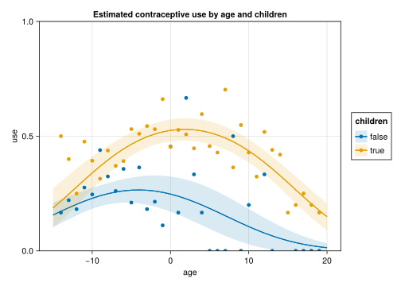

![]()
Code
progress = falseprogress = falseSeveral packages extend the functionality of MixedModels.jl, both in ways specific to mixed models and in ways applicable to more general regression models. In the following, we will use the models from the previous sections to showcase this functionality.
using MixedModelsinsteval = MixedModels.dataset("insteval")
ie1 = fit(MixedModel,
@formula(y ~ 1 + studage + lectage + service + (1|s) + (1|d) + (1|dept)),
insteval; progress)| Est. | SE | z | p | σ_s | σ_d | σ_dept | |
| (Intercept) | 3.2908 | 0.0324 | 101.45 | <1e-99 | 0.3264 | 0.5106 | 0.0787 |
| studage: 4 | 0.0519 | 0.0232 | 2.24 | 0.0249 | |||
| studage: 6 | 0.0721 | 0.0240 | 3.01 | 0.0026 | |||
| studage: 8 | 0.1363 | 0.0264 | 5.17 | <1e-06 | |||
| lectage: 2 | -0.0808 | 0.0154 | -5.25 | <1e-06 | |||
| lectage: 3 | -0.1102 | 0.0167 | -6.59 | <1e-10 | |||
| lectage: 4 | -0.1892 | 0.0196 | -9.65 | <1e-21 | |||
| lectage: 5 | -0.1644 | 0.0214 | -7.68 | <1e-13 | |||
| lectage: 6 | -0.2460 | 0.0205 | -12.01 | <1e-32 | |||
| service: Y | -0.0727 | 0.0135 | -5.40 | <1e-07 | |||
| Residual | 1.1762 |
ie2 = fit(MixedModel,
@formula(y ~ 1 + studage + lectage + service +
(1 | s) +
(1 + service | d) +
(1 + service | dept)),
insteval; progress)| Est. | SE | z | p | σ_s | σ_d | σ_dept | |
| (Intercept) | 3.2985 | 0.0307 | 107.27 | <1e-99 | 0.3242 | 0.5160 | 0.0642 |
| studage: 4 | 0.0502 | 0.0232 | 2.16 | 0.0306 | |||
| studage: 6 | 0.0573 | 0.0242 | 2.37 | 0.0180 | |||
| studage: 8 | 0.1128 | 0.0268 | 4.21 | <1e-04 | |||
| lectage: 2 | -0.0787 | 0.0156 | -5.03 | <1e-06 | |||
| lectage: 3 | -0.1036 | 0.0169 | -6.14 | <1e-09 | |||
| lectage: 4 | -0.1837 | 0.0199 | -9.21 | <1e-19 | |||
| lectage: 5 | -0.1503 | 0.0217 | -6.94 | <1e-11 | |||
| lectage: 6 | -0.2232 | 0.0209 | -10.66 | <1e-25 | |||
| service: Y | -0.0281 | 0.0498 | -0.56 | 0.5732 | 0.3906 | 0.1640 | |
| Residual | 1.1698 |
sleepstudy = MixedModels.dataset("sleepstudy")
ss1 = fit(MixedModel, @formula(reaction ~ 1 + days + (1|subj)), sleepstudy; progress)| Est. | SE | z | p | σ_subj | |
| (Intercept) | 251.4051 | 9.5062 | 26.45 | <1e-99 | 36.0121 |
| days | 10.4673 | 0.8017 | 13.06 | <1e-38 | |
| Residual | 30.8954 |
ss2 = fit(MixedModel, @formula(reaction ~ 1 + days + (1 + days|subj)), sleepstudy; progress)| Est. | SE | z | p | σ_subj | |
| (Intercept) | 251.4051 | 6.6323 | 37.91 | <1e-99 | 23.7805 |
| days | 10.4673 | 1.5022 | 6.97 | <1e-11 | 5.7168 |
| Residual | 25.5918 |
using DataFrames
contra = DataFrame(MixedModels.dataset("contra"))
contra[!, :anych] .= contra[!, :livch] .!= "0"
contrasts = Dict(:livch => EffectsCoding(; base="0"),
:urban => HelmertCoding(),
:anych => HelmertCoding())
gm1 = fit(MixedModel,
@formula(use ~ 1 + urban + anych * age + abs2(age) + (1 | dist & urban)),
contra,
Bernoulli();
contrasts,
progress)| Est. | SE | z | p | σ_dist & urban | |
| (Intercept) | -0.3410 | 0.1265 | -2.70 | 0.0070 | 0.5683 |
| urban: Y | 0.3934 | 0.0853 | 4.61 | <1e-05 | |
| anych: true | 0.6065 | 0.1045 | 5.80 | <1e-08 | |
| age | -0.0129 | 0.0112 | -1.16 | 0.2464 | |
| abs2(age) | -0.0056 | 0.0008 | -6.67 | <1e-10 | |
| anych: true & age | 0.0332 | 0.0128 | 2.59 | 0.0095 |
https://palday.github.io/MixedModelsExtras.jl/v2
MixedModelsExtras.jl is a collection of odds-and-ends that may be useful when working with mixed effects models, but which we do not want to include in MixedModels.jl at this time. Some functions may one day migrate to MixedModels.jl, when we are happy with their performance and interface (e.g. vif), but some are intentionally omitted from MixedModels.jl (e.g. r2, adjr2).
using MixedModelsExtrasr2(ss2; conditional=true)0.8263131631454061r2(ss2; conditional=false)0.28647139510771icc(ie2)0.2885287509497678icc(ie2, :dept)0.01611995223144611vif(ie1)9-element Vector{Float64}:
1.514190169564442
1.735405720716722
1.7822313727377377
1.4493789918354905
1.4380891655002177
1.5948967326558565
1.4634021708623473
1.8267104465362534
1.0161785801934138DataFrame(; coef=fixefnames(ie1)[2:end], VIF=vif(ie1))| Row | coef | VIF |
|---|---|---|
| String | Float64 | |
| 1 | studage: 4 | 1.51419 |
| 2 | studage: 6 | 1.73541 |
| 3 | studage: 8 | 1.78223 |
| 4 | lectage: 2 | 1.44938 |
| 5 | lectage: 3 | 1.43809 |
| 6 | lectage: 4 | 1.5949 |
| 7 | lectage: 5 | 1.4634 |
| 8 | lectage: 6 | 1.82671 |
| 9 | service: Y | 1.01618 |
gvif(ie1)3-element Vector{Float64}:
1.3110871108016546
1.3257310755771141
1.016178580193414DataFrame(; term=termnames(ie1)[2][2:end], GVIF=gvif(ie1))| Row | term | GVIF |
|---|---|---|
| String | Float64 | |
| 1 | studage | 1.31109 |
| 2 | lectage | 1.32573 |
| 3 | service | 1.01618 |
https://github.com/kleinschmidt/RegressionFormulae.jl
RegressionFormulae.jl provides a few extensions to the somewhat more restricted variant of the Wilkinson-Roger notation found in Julia. In particular, it adds / for nested designs within the fixed effects and ^ for computing interactions only up to a certain order.
using RegressionFormulae
fit(MixedModel,
@formula(y ~ 1 + service / (studage + lectage) +
(1 | s) +
(1 | d) +
(1 | dept)),
insteval; progress)| Est. | SE | z | p | σ_s | σ_d | σ_dept | |
| (Intercept) | 3.2788 | 0.0349 | 94.07 | <1e-99 | 0.3266 | 0.5099 | 0.0799 |
| service: Y | -0.0488 | 0.0275 | -1.78 | 0.0758 | |||
| service: N & studage: 4 | 0.0904 | 0.0275 | 3.28 | 0.0010 | |||
| service: Y & studage: 4 | 0.0093 | 0.0285 | 0.33 | 0.7442 | |||
| service: N & studage: 6 | 0.0754 | 0.0275 | 2.74 | 0.0062 | |||
| service: Y & studage: 6 | 0.0648 | 0.0308 | 2.10 | 0.0354 | |||
| service: N & studage: 8 | 0.1398 | 0.0305 | 4.58 | <1e-05 | |||
| service: Y & studage: 8 | 0.1349 | 0.0334 | 4.04 | <1e-04 | |||
| service: N & lectage: 2 | -0.0511 | 0.0197 | -2.60 | 0.0093 | |||
| service: Y & lectage: 2 | -0.1139 | 0.0233 | -4.89 | <1e-05 | |||
| service: N & lectage: 3 | -0.1065 | 0.0211 | -5.06 | <1e-06 | |||
| service: Y & lectage: 3 | -0.1023 | 0.0267 | -3.83 | 0.0001 | |||
| service: N & lectage: 4 | -0.1797 | 0.0252 | -7.14 | <1e-12 | |||
| service: Y & lectage: 4 | -0.1939 | 0.0294 | -6.61 | <1e-10 | |||
| service: N & lectage: 5 | -0.2079 | 0.0283 | -7.34 | <1e-12 | |||
| service: Y & lectage: 5 | -0.1180 | 0.0312 | -3.77 | 0.0002 | |||
| service: N & lectage: 6 | -0.2712 | 0.0264 | -10.27 | <1e-24 | |||
| service: Y & lectage: 6 | -0.2268 | 0.0293 | -7.74 | <1e-14 | |||
| Residual | 1.1759 |
fit(MixedModel,
@formula(y ~ 1 + (studage + lectage + service)^2 +
(1 | s) +
(1 | d) +
(1 | dept)),
insteval; progress)| Est. | SE | z | p | σ_s | σ_d | σ_dept | |
| (Intercept) | 3.2285 | 0.0368 | 87.85 | <1e-99 | 0.3264 | 0.5092 | 0.0800 |
| studage: 4 | 0.1280 | 0.0340 | 3.77 | 0.0002 | |||
| studage: 6 | 0.1525 | 0.0343 | 4.45 | <1e-05 | |||
| studage: 8 | 0.2326 | 0.0399 | 5.83 | <1e-08 | |||
| lectage: 2 | 0.0554 | 0.0302 | 1.84 | 0.0662 | |||
| lectage: 3 | -0.0273 | 0.0640 | -0.43 | 0.6702 | |||
| lectage: 4 | -0.1302 | 0.0724 | -1.80 | 0.0720 | |||
| lectage: 5 | -0.0885 | 0.0807 | -1.10 | 0.2728 | |||
| lectage: 6 | -0.1707 | 0.0836 | -2.04 | 0.0411 | |||
| service: Y | -0.0364 | 0.0278 | -1.31 | 0.1912 | |||
| studage: 4 & lectage: 2 | -0.1117 | 0.0400 | -2.80 | 0.0052 | |||
| studage: 6 & lectage: 2 | -0.1638 | 0.0397 | -4.13 | <1e-04 | |||
| studage: 8 & lectage: 2 | -0.1683 | 0.0469 | -3.59 | 0.0003 | |||
| studage: 4 & lectage: 3 | -0.1105 | 0.0694 | -1.59 | 0.1112 | |||
| studage: 6 & lectage: 3 | -0.1295 | 0.0688 | -1.88 | 0.0599 | |||
| studage: 8 & lectage: 3 | -0.0811 | 0.0714 | -1.14 | 0.2557 | |||
| studage: 4 & lectage: 4 | 0.0420 | 0.0765 | 0.55 | 0.5833 | |||
| studage: 6 & lectage: 4 | -0.1273 | 0.0770 | -1.65 | 0.0983 | |||
| studage: 8 & lectage: 4 | -0.1095 | 0.0797 | -1.37 | 0.1694 | |||
| studage: 4 & lectage: 5 | -0.1794 | 0.0964 | -1.86 | 0.0627 | |||
| studage: 6 & lectage: 5 | -0.1400 | 0.0831 | -1.68 | 0.0921 | |||
| studage: 8 & lectage: 5 | -0.1729 | 0.0864 | -2.00 | 0.0453 | |||
| studage: 4 & lectage: 6 | 0.0491 | 0.0973 | 0.50 | 0.6137 | |||
| studage: 6 & lectage: 6 | -0.0834 | 0.0853 | -0.98 | 0.3282 | |||
| studage: 8 & lectage: 6 | -0.1821 | 0.0867 | -2.10 | 0.0358 | |||
| studage: 4 & service: Y | -0.0841 | 0.0314 | -2.67 | 0.0075 | |||
| studage: 6 & service: Y | -0.0068 | 0.0333 | -0.21 | 0.8376 | |||
| studage: 8 & service: Y | 0.0157 | 0.0364 | 0.43 | 0.6652 | |||
| lectage: 2 & service: Y | -0.0841 | 0.0301 | -2.79 | 0.0053 | |||
| lectage: 3 & service: Y | -0.0031 | 0.0342 | -0.09 | 0.9277 | |||
| lectage: 4 & service: Y | -0.0350 | 0.0379 | -0.93 | 0.3547 | |||
| lectage: 5 & service: Y | 0.0651 | 0.0416 | 1.56 | 0.1176 | |||
| lectage: 6 & service: Y | 0.0137 | 0.0376 | 0.37 | 0.7150 | |||
| Residual | 1.1755 |
https://palday.github.io/BoxCox.jl/v0.3/
BoxCox.jl implements a the Box-Cox transformation in an efficient way. Via package extensions, it supports specializations for MixedModels.jl and several plotting functions, but does not incur a dependency penalty for this functionality when MixedModels.jl or Makie.jl are not loaded.
using BoxCox
bc = fit(BoxCoxTransformation, ss2)Box-Cox transformation
estimated λ: -1.0747
resultant transformation:
y^-1.1 - 1
------------
-1.1using CairoMakie
boxcoxplot(bc; conf_level=0.95)The estimated λ is very close to -1, i.e. the reciprocal of reaction time, which has a natural interpretation as speed. In other words, the Box-Cox transformation suggests that we should consider modelling the sleepstudy data as speed (reaction per unit time) instead of reaction time:
fit(MixedModel, @formula(1000 / reaction ~ 1 + days + (1 + days|subj)), sleepstudy)| Est. | SE | z | p | σ_subj | |
| (Intercept) | 3.9658 | 0.1056 | 37.55 | <1e-99 | 0.4190 |
| days | -0.1110 | 0.0151 | -7.37 | <1e-12 | 0.0566 |
| Residual | 0.2698 |
(We multiply by 1000 to get the responses per second instead of the responses per millisecond.)
BoxCox.jl also works with classical linear models.
https://beacon-biosignals.github.io/Effects.jl/v1.2/
Effects.jl provides a convenient method to compute effects, i.e. predictions and associated prediction intervals computed at points on a reference grid. For models with a nonlinear link function, Effects.jl will also compute appropriate errors on the response scale based on the difference method.
For MixedModels.jl, the predictions are computed based on the fixed effects only.
The functionality of Effects.jl was inspired by the effects and emmeans packages in R and the methods within are based on Fox (2003).
using Effectsdesign = Dict(:age => -15:1:20,
:anych => [true, false])
eff_logit = effects(design, gm1; eff_col="use", level=0.95)| Row | age | anych | use | err | lower | upper |
|---|---|---|---|---|---|---|
| Int64 | Bool | Float64 | Float64 | Float64 | Float64 | |
| 1 | -15 | true | -1.46982 | 0.286496 | -2.03134 | -0.908296 |
| 2 | -14 | true | -1.28635 | 0.257773 | -1.79157 | -0.78112 |
| 3 | -13 | true | -1.11413 | 0.231085 | -1.56704 | -0.661207 |
| 4 | -12 | true | -0.953158 | 0.206515 | -1.35792 | -0.548396 |
| 5 | -11 | true | -0.803443 | 0.184162 | -1.16439 | -0.442493 |
| 6 | -10 | true | -0.664981 | 0.164144 | -0.986698 | -0.343265 |
| 7 | -9 | true | -0.537772 | 0.146597 | -0.825097 | -0.250447 |
| 8 | -8 | true | -0.421815 | 0.131656 | -0.679857 | -0.163773 |
| 9 | -7 | true | -0.317111 | 0.119434 | -0.551197 | -0.0830245 |
| 10 | -6 | true | -0.223659 | 0.109972 | -0.439201 | -0.00811759 |
| 11 | -5 | true | -0.14146 | 0.103193 | -0.343714 | 0.060794 |
| 12 | -4 | true | -0.0705135 | 0.0988598 | -0.264275 | 0.123248 |
| 13 | -3 | true | -0.0108196 | 0.0965852 | -0.200123 | 0.178484 |
| ⋮ | ⋮ | ⋮ | ⋮ | ⋮ | ⋮ | ⋮ |
| 61 | 9 | false | -1.98338 | 0.392298 | -2.75227 | -1.21449 |
| 62 | 10 | false | -2.13644 | 0.417895 | -2.9555 | -1.31738 |
| 63 | 11 | false | -2.30076 | 0.444744 | -3.17244 | -1.42908 |
| 64 | 12 | false | -2.47632 | 0.47289 | -3.40317 | -1.54948 |
| 65 | 13 | false | -2.66314 | 0.502378 | -3.64778 | -1.6785 |
| 66 | 14 | false | -2.86121 | 0.533247 | -3.90636 | -1.81607 |
| 67 | 15 | false | -3.07054 | 0.565536 | -4.17897 | -1.96211 |
| 68 | 16 | false | -3.29111 | 0.599276 | -4.46567 | -2.11655 |
| 69 | 17 | false | -3.52294 | 0.634497 | -4.76653 | -2.27935 |
| 70 | 18 | false | -3.76602 | 0.671226 | -5.0816 | -2.45044 |
| 71 | 19 | false | -4.02036 | 0.709487 | -5.41093 | -2.62979 |
| 72 | 20 | false | -4.28594 | 0.7493 | -5.75454 | -2.81734 |
eff_prob = effects(design, gm1; eff_col="use", level=0.95, invlink=AutoInvLink())| Row | age | anych | use | err | lower | upper |
|---|---|---|---|---|---|---|
| Int64 | Bool | Float64 | Float64 | Float64 | Float64 | |
| 1 | -15 | true | 0.18697 | 0.043551 | 0.101612 | 0.272329 |
| 2 | -14 | true | 0.216472 | 0.0437213 | 0.13078 | 0.302164 |
| 3 | -13 | true | 0.247103 | 0.0429917 | 0.16284 | 0.331365 |
| 4 | -12 | true | 0.27825 | 0.0414738 | 0.196963 | 0.359537 |
| 5 | -11 | true | 0.309289 | 0.0393423 | 0.23218 | 0.386399 |
| 6 | -10 | true | 0.339621 | 0.0368141 | 0.267467 | 0.411776 |
| 7 | -9 | true | 0.368706 | 0.0341222 | 0.301828 | 0.435584 |
| 8 | -8 | true | 0.396082 | 0.0314924 | 0.334359 | 0.457806 |
| 9 | -7 | true | 0.42138 | 0.0291203 | 0.364305 | 0.478455 |
| 10 | -6 | true | 0.444317 | 0.0271521 | 0.3911 | 0.497534 |
| 11 | -5 | true | 0.464694 | 0.0256696 | 0.414382 | 0.515005 |
| 12 | -4 | true | 0.482379 | 0.0246842 | 0.433999 | 0.530759 |
| 13 | -3 | true | 0.497295 | 0.0241456 | 0.449971 | 0.54462 |
| ⋮ | ⋮ | ⋮ | ⋮ | ⋮ | ⋮ | ⋮ |
| 61 | 9 | false | 0.120959 | 0.0417121 | 0.0392044 | 0.202713 |
| 62 | 10 | false | 0.105605 | 0.0394712 | 0.0282426 | 0.182967 |
| 63 | 11 | false | 0.0910602 | 0.0368107 | 0.0189126 | 0.163208 |
| 64 | 12 | false | 0.0775347 | 0.0338225 | 0.0112438 | 0.143826 |
| 65 | 13 | false | 0.0651836 | 0.0306122 | 0.00518474 | 0.125182 |
| 66 | 14 | false | 0.0541046 | 0.0272901 | 0.000616879 | 0.107592 |
| 67 | 15 | false | 0.0443391 | 0.0239635 | -0.00262855 | 0.0913067 |
| 68 | 16 | false | 0.0358773 | 0.020729 | -0.00475083 | 0.0765055 |
| 69 | 17 | false | 0.0286665 | 0.0176674 | -0.00596097 | 0.0632939 |
| 70 | 18 | false | 0.0226204 | 0.01484 | -0.00646538 | 0.0517062 |
| 71 | 19 | false | 0.0176302 | 0.0122878 | -0.00645358 | 0.0417139 |
| 72 | 20 | false | 0.0135738 | 0.0100328 | -0.00609014 | 0.0332378 |
Effects are particularly nice for visualizing the model fit and its predictions.
using AlgebraOfGraphics # like ggplot2, but an algebra instead of a grammar
using CairoMakie
plt1 = data(eff_logit) *
mapping(:age, :use; color=:anych) *
(visual(Lines) + mapping(; lower=:lower, upper=:upper) * visual(LinesFill))
draw(plt1)plt2 = data(eff_prob) *
mapping(:age, :use; color=:anych => "children") *
(visual(Lines) + mapping(; lower=:lower, upper=:upper) * visual(LinesFill))
draw(plt2)using Statistics: mean
contra_by_age = transform(contra,
:age => ByRow(x -> round(Int, x)),
:use => ByRow(==("Y"));
renamecols=false)
contra_by_age = combine(groupby(contra_by_age, [:age, :anych]),
:use => mean => :use)
plt3 = plt2 +
data(contra_by_age) *
mapping(:age, :use;
color=:anych => "children") * visual(Scatter)
draw(plt3;
axis=(; title="Estimated contraceptive use by age and children",
limits=(nothing, (0, 1)) # ylim=0,1, xlim=auto
))
Effects and estimated marginal (least squares) means are closely related and partially concepts. Effects.jl provides convenience function emmeans and empairs for computing EM means and pairwise differences of EM means.
emmeans(gm1)| Row | age | urban | anych | use: Y | err |
|---|---|---|---|---|---|
| Float64 | String | Bool | Float64 | Float64 | |
| 1 | 0.00204757 | N | false | -1.34092 | 0.22117 |
| 2 | 0.00204757 | Y | false | -0.554182 | 0.229908 |
| 3 | 0.00204757 | N | true | -0.127828 | 0.112245 |
| 4 | 0.00204757 | Y | true | 0.658906 | 0.149691 |
empairs(gm1; dof=Inf)| Row | age | urban | anych | use: Y | err | dof | t | Pr(>|t|) |
|---|---|---|---|---|---|---|---|---|
| Float64 | String | Any | Float64 | Float64 | Float64 | Float64 | Float64 | |
| 1 | 0.00204757 | N > Y | false | -0.786734 | 0.31902 | Inf | -2.46609 | 0.0136596 |
| 2 | 0.00204757 | N | false > true | -1.21309 | 0.248022 | Inf | -4.89104 | 1.00303e-6 |
| 3 | 0.00204757 | N > Y | false > true | -1.99982 | 0.267065 | Inf | -7.48814 | 6.98539e-14 |
| 4 | 0.00204757 | Y > N | false > true | -0.426354 | 0.255845 | Inf | -1.66645 | 0.0956232 |
| 5 | 0.00204757 | Y | false > true | -1.21309 | 0.274345 | Inf | -4.42176 | 9.79024e-6 |
| 6 | 0.00204757 | N > Y | true | -0.786734 | 0.1871 | Inf | -4.20488 | 2.61215e-5 |
Effects.jl will work with any package that supports the StatsAPI.jl-based RegressionModel interface.
https://beacon-biosignals.github.io/StandardizedPredictors.jl/v1/
StandardizedPredictors.jl provides a convenient way to express centering, scaling, and z-standardization as a “contrast” via the pseudo-contrasts Center(), Scale, ZScore. Because these use the usual contrast machinery, they work well with any packages that use that machinery correctly (e.g. Effects.jl). The default behavior is to empirically compute the center and scale, but these can also be explicitly provided, either as a number or as a function (e.g. median to use the median for centering.)
using StandardizedPredictors
contrasts = Dict(:days => Center())
fit(MixedModel,
@formula(reaction ~ 1 + days + (1 + days|subj)), sleepstudy;
contrasts)| Est. | SE | z | p | σ_subj | |
| (Intercept) | 298.5079 | 8.7950 | 33.94 | <1e-99 | 36.4260 |
| days(centered: 4.5) | 10.4673 | 1.5022 | 6.97 | <1e-11 | 5.7168 |
| Residual | 25.5919 |
StandardizedPredictors.jl will work with any package that supports the StatsModels.jl-based @formula and contrast machinery.
https://juliainterop.github.io/RCall.jl/stable/
https://github.com/palday/JellyMe4.jl/
RCall.jl provides a convenient interface for interoperability with R from Julia. JellyMe4.jl extends the functionality of RCall so that MixedModels.jl-fitted models and lme4-fitted models can be translated to each other. In practical terms, this means that you can enjoy the speed of Julia for model fitting, but use all the extra packages you love from R’s larger ecosystem.